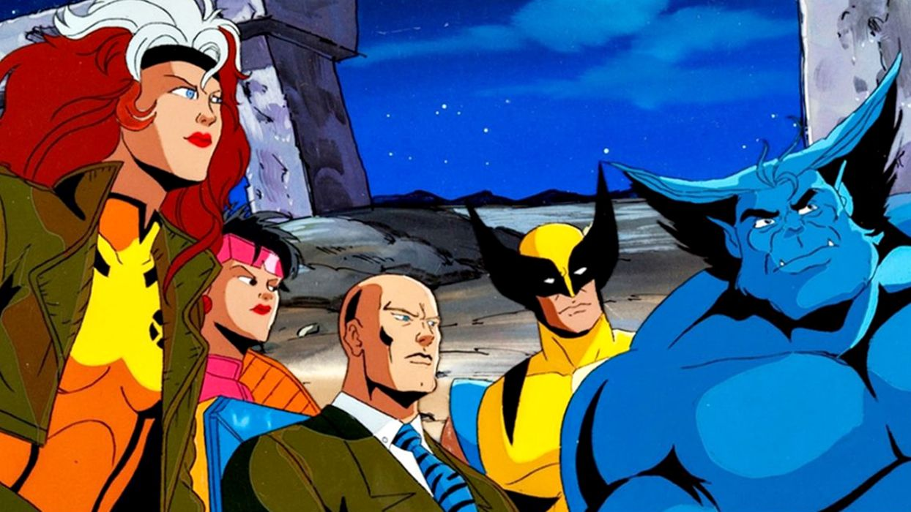

O primeiro ano introduz os X-Men pelos olhos da novata Jubileu, cujos pais adotivos colocam seu nome no Ato de Registro de Mutantes, um programa do governo que quer eliminar os mutantes com ajuda dos Sentinelas, robôs gigantes criados especificamente para caçar indivíduos com gene-X. Ela é salva com ajuda dos X-Men, grupo de alunos que vivem e aprendem a controlar os seus poderes no instituto comandado pelo Professor Xavier. A formação inicial da equipe no desenho conta com Ciclope, Jean Grey, Wolverine, Vampira, Tempestade e Gambit. O Fera também integra o time, mas passa a primeira temporada quase toda preso após essa primeira batalha. O mesmo acontece com Morfo. O personagem, que também integra o grupo formado por Xavier, é dado como morto logo no comecinho da temporada
A segunda temporada começa com o casamento de Jean e Ciclope (para o terror do Wolverine). Os dois, no entanto, não têm tempo para a lua de mel e, logo de cara, são raptados pelo Senhor Sinistro e seus capangas, os Nasty Boys. No episódio, é revelado que o vilão fez uma lavagem cerebral no Morfo — o X-Man que supostamente tinha morrido na primeira temporada. Sob controle mental, o ex-X-Men enfrenta seus antigos amigos.